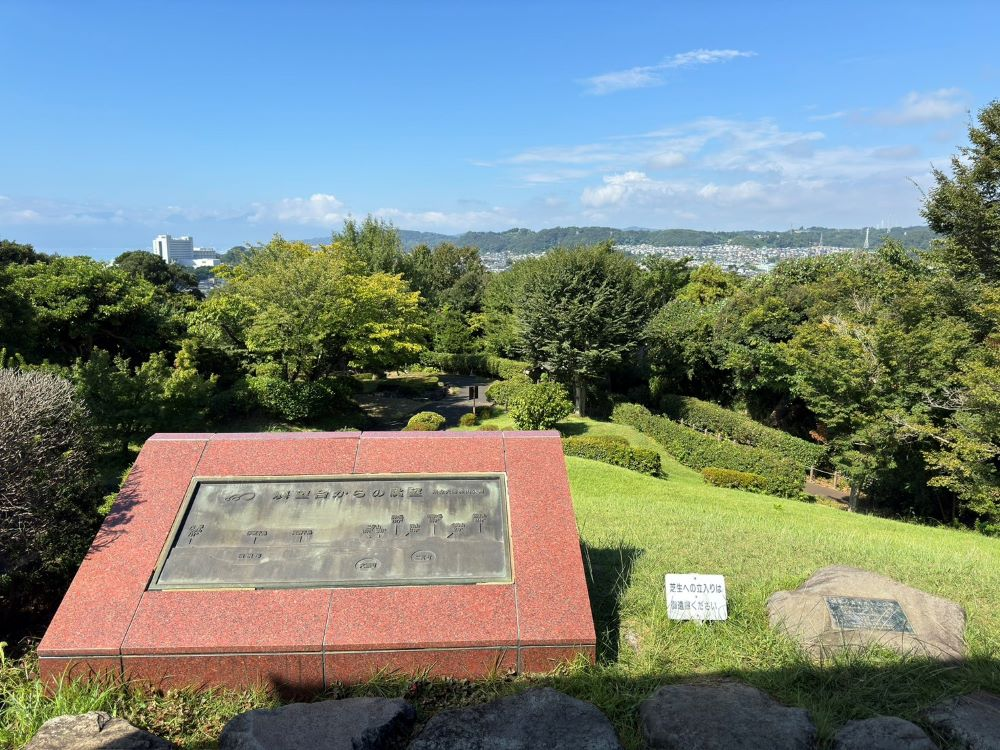

旧三井別邸地区
旧三井別邸地区は、三井財閥当主が構えていた別荘やその庭園の歴史を残して1987年に県立大磯城山公園内の一部として開園されました。不動池とその周りを紅葉が彩る日本庭園や、関東の富士見百景にも指定されている展望台、国宝の茶室「如庵」を模して建てられた「城山庵」など多くの歴史と魅力の詰まった地区となっています。中にある大磯郷土資料館では、長い歴史を持つ大磯に関する多くの展示がされており、この地ならではの自然やゆかりのある人物についてなど、長きにわたる様々な歴史を感じることができます。
{kind=link}
フォトギャラリー
-

- 展望台
- 富士山から箱根連山、伊豆半島にかけての山並みに加え、相模湾や伊豆大島などを一望することのできる絶景ポイントです。
-
- 城山庵
- 1990年3月に、三井家別荘に置かれていた国宝の茶室「如庵」を模して落成されました。
-
- 抹茶（生菓子付）
- 城山庵内のお憩み処では、抹茶やソフトドリンクを召し上がることができ、日本庭園を眺めながら休憩することができます。
-
- 城山庵の内装
- 和を感じる落ち着いた雰囲気で、奥にある茶室や水屋は見学することができます。
-
- 小淘綾（こゆるぎ）ノ滝
- 自然に囲まれた中で流れる涼しげな水の音で、癒しを感じることができます。
-
- 郷土資料館
- 「湘南の丘陵と海」をテーマとし、大磯の様々な文化・歴史が残されています。
-
- ゆかりのある人物
- かつて大磯には多くの政財界要人の別荘が立ち並んでおり、「政界の奥座敷」と称されていました。
-
- 大磯の自然
- 大磯丘陵で見られる動植物の剥製が数多く展示されています。
-
- 文学と大磯
- 大磯は政界に留まらず、文学においても表される地となっており、様々な文人らが暮らしていました。
{kind=link}
{kind=link}
{kind=link}
{kind=link}
{kind=link}
{kind=link}
{kind=link}
{kind=link}
{kind=link}
アクセス
【住所】〒259-0111 中郡大磯町国府本郷551-1
【電話】0463-61-0355
【開館時間】9時00分～17時00分（郷土資料館）
【営業時間】9時00分～16時00分（茶室「城山庵」）
【休館日】月曜日・毎月1日・年末年始（12月29日～1月3日）
【アクセス】徒歩でお越しの際：東海道線大磯駅から徒歩（約30分）
バスでお越しの際：「城山公園前」下車、徒歩（約5分）